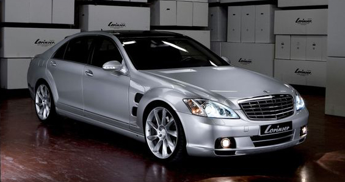

Утончённая роскошь и инновационные технологииMercedes-Benz — это синоним утончённой роскоши, инновационных технологий и непревзойдённого качества. Здесь, где стиль встречается с мощью, а традиции гармонично переплетаются с новейшими достижениями инженерной мысли, вы найдёте автомобиль своей мечты. |
 |
Это полный ФАРШ